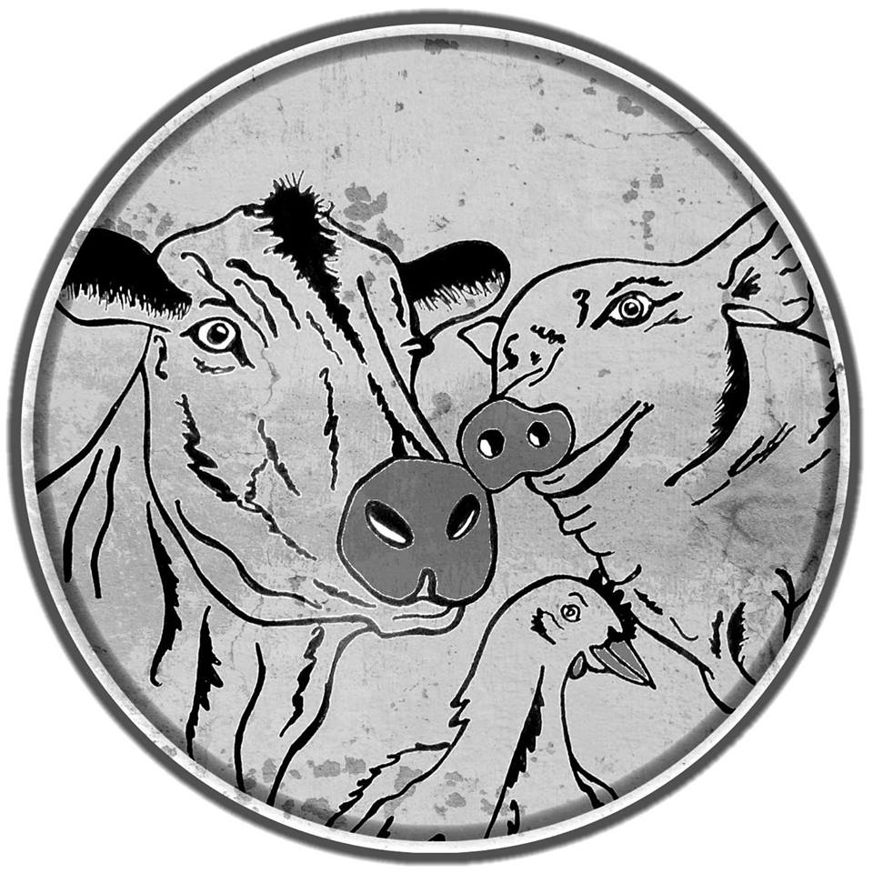

End of Silence Hannover
Dokumentationen
YouTube
Dominion
Seaspiracy
101 Reasons to go vegan
ZDF: Tierfabrik Deutschland
DAIRY IS SCARY! The industry explained in 5 minutes
Netflix
Cowspiracy
What the health
YouTube Channel
Vegan ist ungesund
PLANT BASED NEWS
Mic the Vegan
Informationen
Veganstart.de
Challenge22.com
Nutritionfacts.org
ARIWA.org
HappyCow.net
Bücher
The_China_Study
Warum wir Hunde lieben, Schweine essen und Kühe anziehen
The How Not to Die